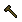

runic smith hammerで装備品を作成したとき、付加されるマジック効果のデータ(種類と強度)をまとめています。
使用した道具の種類によって付加されるマジック効果の数と強度の範囲が決まっていますが、 付加される効果の種類は決まっていません。
Runic toolの強度変更暫定仕様（現在テスト中）
（１）武器
| runic smith hammer | Dull | Shadow | Copper | Bronze | Gold | Agapite | Verite | Valorite |
| 画像 |  |
 |
 |
 |
 |  |
 |
 |
| 効果強度（％） | 10〜 35% |
20〜 45% |
25〜 50% |
30〜 65% |
35〜 75% |
40〜 80% |
45〜 90% |
50〜 100% |
| 追加プロパティ数 | 1〜2 | 2 | 2〜3 | 3 | 3〜4 | 4 | 4〜5 | 5 |
| 攻撃命中時に発動する効果 | ||||||||
| 魔法
Magic arrow[炎] Harm[冷気] Fireball[炎] Lightning[エネ] Dispel どれか1つのみ 出現率5%程度 |
6〜 18% |
10〜 22% |
12〜 26% |
16〜 32% |
18〜 38% |
20〜 40% |
22〜 44% |
26〜 50% |
| エリア攻撃
物理Area[物理] 炎Area[炎] 冷気Area[冷気] 毒Area[毒] Energy Area[エネ] どれか1つのみ 出現率1%程度 |
6〜 18% |
10〜 22% |
12〜 26% |
16〜 32% |
18〜 38% |
20〜 40% |
22〜 44% |
26〜 50% |
| リーチ系
スタミナリーチ 出現率5%程度 |
6〜 18% |
10〜 22% |
12〜 26% |
16〜 32% |
18〜 38% |
20〜 40% |
22〜 44% |
26〜 50% |
リーチ系強度
ライフリーチ マナリーチ 複数選ばれる 可能性あり 各出現率5%程度 |
3〜 9 |
5〜 11 |
6〜 13 |
8〜 16 |
9〜 19 |
10〜 20 |
11〜 22 |
13〜 25 |
| 能力低下系
命中率低下 回避率低下 複数選ばれる 可能性あり 命中低下は3%程度 回避低下は5%程度 |
6〜 18% |
10〜 22% |
12〜 26% |
16〜 32% |
18〜 38% |
20〜 40% |
22〜 44% |
26〜 50% |
| 装備時点で有効な効果 | ||||||||
| 幸運 出現率5%程度 |
10〜 35 |
20〜 45 |
25〜 50 |
30〜 65 |
35〜 75 |
40〜 80 |
45〜 90 |
50〜 100 |
| 武器ダメージ*1 出現率15%程度 |
― | ― | ― | ― | 35〜 38% |
35〜 40% |
35〜 45% |
35〜 50% |
| 命中 出現率5%程度 |
2〜5% | 3〜7% | 4〜8% | 5〜10% | 5〜11% | 6〜12% | 7〜13% | 8〜15% |
| 回避 出現率5%程度 |
2〜5% | 3〜7% | 4〜8% | 5〜10% | 5〜11% | 6〜12% | 7〜13% | 8〜15% |
| 属性抵抗値
物理抵抗 炎抵抗 冷気抵抗 毒抵抗 エネルギー抵抗 複数選ばれる 可能性あり 出現率1%程度 |
2〜5% | 3〜7% | 4〜8% | 5〜10% | 5〜11% | 6〜12% | 7〜13% | 8〜15% |
| 速度 出現率5%程度 |
5〜 10% |
5〜 15% |
10〜 15% |
10〜 20% |
10〜 25% |
10〜 25% |
15〜 25% |
15〜 30% |
| 魔道武器スキル 出現率5%程度 |
-27〜 -29 |
-26〜 -28 |
-25〜 -28 |
-24〜 -27 |
-22〜 -27 |
-22〜 -26 |
-21〜 -26 |
-20〜 -25 |
| 属性攻撃 出現率5%程度 |
どの種類の道具でも同じ効果です 物理以外の属性100％は出現率約1％ |
|||||||
| 特効 (〜Slayer) 特効25種から 1種類のみ 出現率5%程度 |
太字の6種類は種族系全特効で低出現率 （Publish26以降、出現率約2％） |
|||||||
| ベストウェポンスキル 出現率5%程度 |
どの種類の道具でも同じ効果です | |||||||
| ファストキャスト1 出現率5%程度 |
どの種類の道具でも同じ効果です | |||||||
| 詠唱可 ＋ファストキャスト-1 出現率5%程度 |
どの種類の道具でも同じ効果です | |||||||
*1:作成品の品質にかかわらず、ダメージ増加＋34％以下は出現しません。(不具合？)
（２）防具
| runic smith hammer | Dull | Shadow | Copper | Bronze | Gold | Agapite | Verite | Valorite |
| 画像 | |
|
|
|
|
|
|
|
| 効果強度（％） | 10〜 35% |
20〜 45% |
25〜 50% |
30〜 65% |
35〜 75% |
40〜 80% |
45〜 90% |
50〜 100% |
| 追加プロパティ数 | 1〜2 | 2 | 2〜3 | 3 | 3〜4 | 4 | 4〜5 | 5 |
| ステータス変化 | ||||||||
| ヒットポイント増加 （出現率1/16程度） |
1〜2 | 1〜2 | 1〜3 | 2〜3 | 2〜4 | 2〜4 | 2〜4 | 3〜5 |
| スタミナ増加 （出現率1/16程度） |
1〜3 | 2〜4 | 2〜4 | 2〜5 | 3〜6 | 3〜6 | 4〜7 | 4〜8 |
| マナ増加 （出現率1/16程度） |
1〜3 | 2〜4 | 2〜4 | 2〜5 | 3〜6 | 3〜6 | 4〜7 | 4〜8 |
| 幸運 （出現率1/16程度） |
10〜 35 |
20〜 45 |
25〜 50 |
30〜 65 |
35〜 75 |
40〜 80 |
45〜 90 |
50〜 100 |
| 回復・耐久系 | ||||||||
| ヒットポイント回復 （出現率1/64程度） |
0〜1 | 0〜1 | 1 | 1 | 1〜2 | 1〜2 | 1〜2 | 1〜2 |
| スタミナ回復 （出現率1/64程度） |
0〜1 | 1 | 1〜2 | 1〜2 | 1〜2 | 1〜2 | 1〜3 | 2〜3 |
| マナ回復 （出現率1/16程度） |
0〜1 | 0〜1 | 1 | 1 | 1〜2 | 1〜2 | 1〜2 | 1〜2 |
| 自己修復 （出現率1/16程度） |
1〜2 | 1〜2 | 1〜3 | 2〜3 | 2〜4 | 2〜4 | 2〜4 | 3〜5 |
| 抵抗・反射系 | ||||||||
| 物理抵抗 （出現率1/16程度） |
2〜5% | 3〜7% | 4〜8% | 5〜10% | 5〜11% | 6〜12% | 7〜13% | 8〜15% |
| 炎抵抗 （出現率1/16程度） |
2〜5% | 3〜7% | 4〜8% | 5〜10% | 5〜11% | 6〜12% | 7〜13% | 8〜15% |
| 冷気抵抗 （出現率1/16程度） |
2〜5% | 3〜7% | 4〜8% | 5〜10% | 5〜11% | 6〜12% | 7〜13% | 8〜15% |
| 毒抵抗 （出現率1/16程度） |
2〜5% | 3〜7% | 4〜8% | 5〜10% | 5〜11% | 6〜12% | 7〜13% | 8〜15% |
| エネルギー抵抗 （出現率1/16程度） |
2〜5% | 3〜7% | 4〜8% | 5〜10% | 5〜11% | 6〜12% | 7〜13% | 8〜15% |
| 物理ダメージ反射 （出現率1/16程度） |
2〜5% | 3〜7% | 4〜8% | 5〜10% | 5〜11% | 6〜12% | 7〜13% | 8〜15% |
| コスト低減 | ||||||||
| 秘薬コスト （出現率1/16程度） |
-3〜 -7% |
-4〜 -9% |
-5〜 -10% |
-6〜 -13% |
-7〜 -15% |
-8〜 -16% |
-9〜 -18% |
-10〜 -20% |
| マナコスト （出現率1/16程度） |
-1〜 -3% |
-2〜 -4% |
-2〜 -4% |
-2〜 -5% |
-3〜 -6% |
-3〜 -6% |
-4〜 -7% |
-4〜 -8% |
| その他の効果 | ||||||||
| 瞑想可 （出現率1/16程度） |
どの種類の道具でも同じ効果です | |||||||
| Night sight （出現率1/32程度） |
どの種類の道具でも同じ効果です | |||||||
回復0は、プロパティを1消費して表示されない状態となります。
（３）盾
| runic smith hammer | Dull | Shadow | Copper | Bronze | Gold | Agapite | Verite | Valorite |
| 画像 | |
|
|
|
|
|
|
|
| 効果強度（％） | 10〜 35% |
20〜 45% |
25〜 50% |
30〜 65% |
35〜 75% |
40〜 80% |
45〜 90% |
50〜 100% |
| 追加プロパティ数 | 1〜2 | 2 | 2〜3 | 3 | 3〜4 | 4 | 4〜5 | 5 |
| 耐久性増加 | 10〜 20% |
20〜 40% |
20〜 50% |
30〜 60% |
30〜 80% |
40〜 80% |
40〜 90% |
50〜 100% |
| 自己修復 | 1〜2 | 1〜2 | 1〜3 | 2〜3 | 2〜4 | 2〜4 | 2〜4 | 3〜5 | 回避 | 2〜5% | 3〜7% | 4〜8% | 5〜10% | 5〜11% | 6〜12% | 7〜13% | 8〜15% |
| 物理ダメージ反射 | 2〜5% | 3〜7% | 4〜8% | 5〜10% | 5〜11% | 6〜12% | 7〜13% | 8〜15% |
| 装備条件 | -10〜 -30% |
-20〜 -40% |
-20〜 -50% |
-30〜 -60% |
-30〜 -80% |
-40〜 -80% |
-40〜 -90% |
-50〜 -100% |
| ファストキャスト1 | どの種類の道具でも同じ効果です | |||||||
| 詠唱可 ＋ファストキャスト-1 |
どの種類の道具でも同じ効果です | |||||||
マジックプロパティの出現率はどれも同じです。
Publish26より、物理ダメージ反射のプロパティが付加されるようになりました。
宝珠の守人より、盾には命中プロパティが付加されなくなりました。